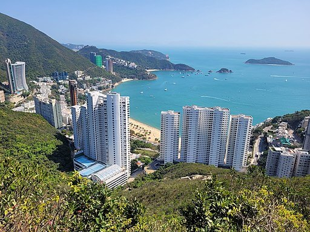

Hong Kong Skyline City Skyline during Night Time by Dadan Fitrayana Tian Tan Buddha Statue A Low Angle Shot of a Big Statue Sitting by Fredric Lee Phillips Repulse Bay Beach  View of Repulse Bay from Sir Cecil's Ride from Wikimedia Commons Dragon's Back Hike Dragon's Back hike, Hong Kong by Rick McCharles Interesting Facts: